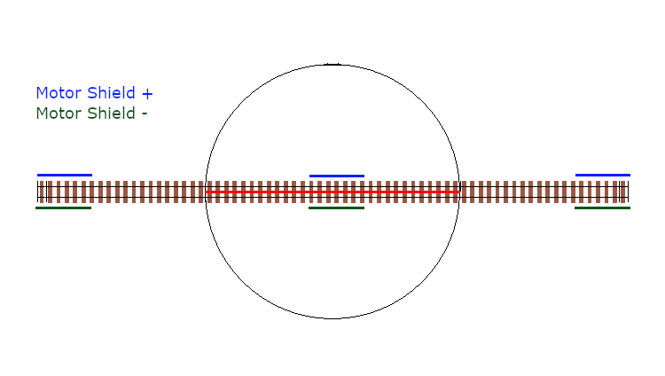
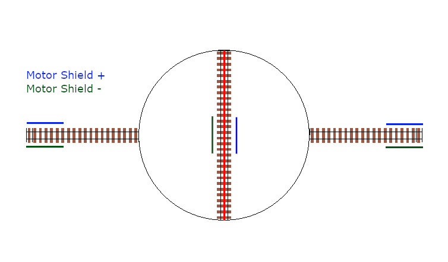
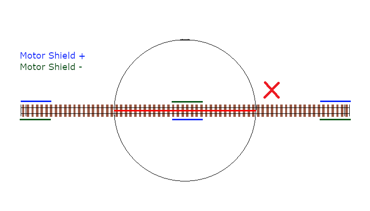
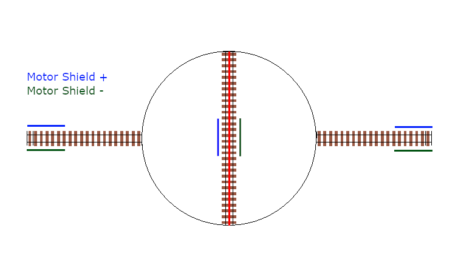
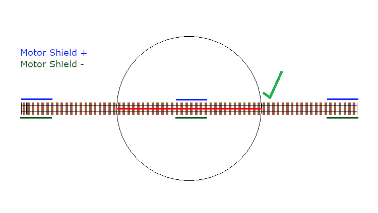
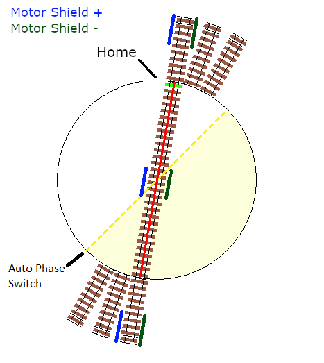
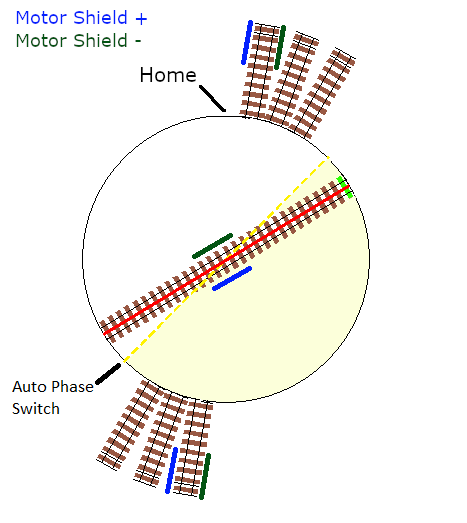
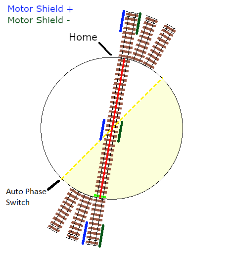
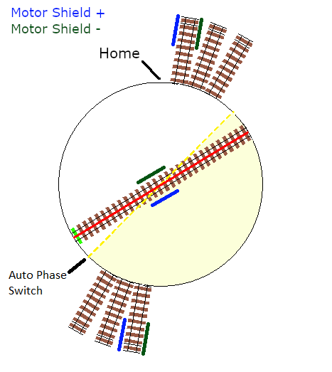

EX-Turntable - Overview¶
Welcome to the home of EX-Turntable, a fully integrated turntable controller for EX-CommandStation.
What is EX-Turntable?¶
EX-Turntable is a fully integrated turntable controller, using an additional Arduino (Nano or Uno) microcontroller to drive a stepper motor that rotates a turntable to align the bridge track with the surrounding layout tracks.
While we aim to keep things simple, please note that there are complexities in setting up a turntable that tend to make EX-Turntable more in the realm of the |tinkerer-text| level user.
To make things easier, a turntable object is now available to define and control both EX-Turntable and DCC controlled turntables, which also allows throttle developers to implement direct control of turntables if they so wish. More information on how to use this with EX-Turntable is on the test and tune page.
It's highly recommended running the latest of both EX-CommandStation and EX-Turntable to ensure feature parity with the two, and ensure you have the latest bug fixes and so forth.
Supported stepper drivers and motors¶
The EX-Turntable integration includes:
- Support for an Arduino Nano or Uno
- I2C (I2C) device driver
- EXRAIL automation support
- Debug/test command (handy for tuning step positions)
- Out-of-the-box support for several common stepper drivers and motors
- Traverser mode for horizontal/vertical traversers, and turntables that cannot rotate a full 360 degrees
- Automatic or manual DCC signal phase switching to align bridge track phase with layout phase (if your turntable doesn't do this already)
- An LED and accessory output to control turntable specific automations (e.g. flashing warning light)
Credit where credit is due!
AccelStepper.h credit: This project would not be effective without the excellent work by Mike McCauley on the AccelStepper.h library that enables us to have somewhat prototypical acceleration and deceleration of the turntable. This library is included with the EX-Turntable software (sans example sketches), and more details can be found on the official AccelStepper web page. Note as of version 0.7.0 there is no longer a need for modifications to the library.
NmraDcc.h credit: Also, while not directly used in this software, Alex Shephard's "DCCInterface_TurntableControl" was the inspiration for the initial turntable logic for another DCC driven turntable that translated into the beginnings of EX-Turntable. You can see this code as part of the NmraDcc Arduino library.
How Does It Work?¶
Full step, half step, and other modes
Stepper motor drivers typically support more than one mode for driving stepper motors. This simply means that they can be turned less than one complete step, allowing more granular control of positioning, resulting in higher precision, and much smoother operation. For example, the DRV8825 can drive 1/32 of a step, talk about smooooth!
If you're not familiar with stepper motors then you only need a very basic understanding of how they work in order to use EX-Turntable successfully on your layout, as the concept is very simple.
A stepper motor is able to be rotated one step at a time, which translates to degrees of movement around a circle. For example, the ubiquitous 28BYJ-48 stepper motor referred to here takes 2048 steps to make a full 360 degree rotation (in full step mode). The higher the number of steps in a single rotation, the easier it will be to get perfect alignment between the turntable and your layout, and this also typically translates to smoother rotation.
Number of steps
You don't actually need to know the number of steps required to make a full rotation as this is calculated by EX-Turntable the first time it starts up and performs the calibration sequence. You will see the number displayed in the serial console as outlined in first start and automatic calibration.
In EX-Turntable, at startup, the turntable will rotate until such time as the homing sensor is activated, in which case it will set the homed position as step 0 and stop moving. Typically, the homing sensor is a hall effect device mounted in the turntable pit which is activated when a magnet in one end of the turntable bridge comes in to close proximity.
Once the home position is determined, the various positions on your layout are defined as the number of steps from this home position.
The command used to move to these positions simply sends the number of steps to EX-Turntable, which calculates the steps required in order to move the least number of steps to the desired position, meaning it will rotate either clockwise or counter clockwise depending which is the shortest distance.
tip
- It's recommended that the home position does not align with a specific layout connection track to ensure that each time EX-Turntable powers on, it automatically triggers the homing activity to occur, ensuring it starts in a consistent location each time for the highest accuracy.
Refer to the Test and tune page for details on how to configure and control EX-Turntable.
Considerations when using geared steppers, turntables, and/or microsteps¶
Due to the HAL within EX-CommandStation, the maximum number of steps per rotation the EX-Turntable device driver can address is 32767.
If your physical turntable involves gearing, for example a small spur gear on the stepper driving a large gear connected to the turntable or you have a stepper with an inbuilt gearbox, you will need to know the gear ratio, and multiply that by the number of steps per rotation of your stepper motor. This would give a resultant step per rotation count that needs to be no more than 32767 steps.
# large gear teeth / # small gear teeth * stepper steps per rotation
For example, if you have a large gear on the base of a turntable with 200 teeth which is driven by a 20 tooth spur gear on the stepper motor, that gives a gear ratio of 10:1 (200 / 20). If you then use the 28BYJ-48 stepper in half step mode with 4096 steps per revolution, this would result in 40960 steps per revolution with this gearing, meaning EX-Turntable will not be able to successfully address a full rotation.
single step (or microstep) in one go
Given a stepper motor needs to complete an entire, single step (or microstep) in one go, implementing a gear ratio that results in a fractional step count for a single, complete revolution will result in inaccuracies, as the step count will always be rounded to an integer. Always ensure the resultant steps per rotation will be a whole number before purchasing or building any geared stepper configuration.
In this scenario, running the 28BYJ-48 in full step mode (2048 steps) would allow this to work, as a full rotation is 20480 steps.
When using stepper drivers such as the A4988, DRV8825, or TMC2208, these are able to be configured using microsteps, which again impacts the number of steps per revolution of the stepper.
In the case of a DRV8825, the smallest microstep it can be configured for is 1/32, meaning a NEMA17 stepper with 200 steps per revolution in 1/32 microstep mode equates to 6400 steps per revolution.
While this is well within the limit of the maximum 32767 steps in EX-Turntable, if you then use this in the same gear ratio calculated above, it will result in 64000 steps per revolution, which is well outside EX-Turntable's limit.
Introduced in EX-Turntable version 0.6.0, there is an option that allows for larger step counts than the maximum of 32767. This number is used as a multiplier for the number of steps sent from EX-CommandStation and is set by defining #define STEPPER_GEARING_FACTOR x in your "config.h" file, where "x" is a number from 1 to 10.
For example, if you had a step per revolution count of 60000 after calculating your gear ratio, you would set a gearing factor of 2, meaning all step counts configured in EX-CommandStation are 30000 or less (60000 / 2), allowing for control of this configuration. Refer to stepper gearing factor for how to configure this option.
If you have a need to set a gearing factor higher than 1, you will likely also need to adjust the Sanity Steps option to allow the calibration process to still function, as by default it will stop at 10000 steps.
Important! Phase (or polarity) switching¶
An important aspect that must be taken into consideration with a rotating turntable is the phase or polarity of the turntable bridge track in relation to the surrounding layout tracks.
DCC phase (or polarity) is not aligned
If your locomotive drives on to the turntable bridge track, and the DCC phase (or polarity) is not aligned with the surrounding layout tracks, then you will cause a short circuit. The CommandStation should cut power in that scenario, but the desired behaviour is simply to drive onto the turntable with no interruption.
In order to prevent short circuits, the phase (or polarity) of the bridge track will need to be inverted when rotating to ensure it remains in alignment with the surrounding tracks. There are three options to achieve this:
- Use an auto-reverser that automatically reverses the phase when a short circuit is detected (the Digitrax AR1 is a commonly used option here)
- Use a mechanical method to switch the phase based on the physical position of the turntable
- Use EX-Turntable to automatically (or manually) invert the phase as appropriate
The critical aspect when using EX-Turntable/EXRAIL or a mechanical method to control the phase is to ensure the entry and exit tracks for each position are wired with the same phase or polarity. An auto reverser will allow out of phase layouts to work as it will always reverse on a short circuit.
Consider the turntable starting in alignment with the entry and exit tracks, with everything wired in alignment so the +/- connections from the |motor shield| are connected to the same rail all the way along.
If we do not invert or reverse the phase, when it rotates 180 degrees, there will be an obvious issue!



Now consider inverting or reversing the phase when performing that 180 degree turn, and the result is just like the starting point, with all tracks in DCC phase alignment.


How does this work with EX-Turntable?¶
EX-Turntable supports automatic phase switching by default, but can also be controlled manually by both EXRAIL and diagnostic commands.
With the default automatic phase switching, once the turntable rotates 45 degrees away from the home position, it will automatically invert the DCC phase, with the phase then reverting 180 degrees later once the turntable rotates to 225 degrees from the home position.
In the diagrams below, the "home" end of the turntable bridge is indicated by the bright green sleeper, with the "home" position of 0 degrees being located at the top of the diagram. The surrounding layout tracks are separated by 10 degrees.
The yellow dashed line represents the 45/225 degree trigger points to invert and revert the phase switching, with the light yellow shaded area representing the 180 degrees in which the phase will be inverted.
The surrounding layout tracks have been wired so that each opposing track is wired the same.
To start, the turntable bridge is aligned with the first layout track, which is 10 degrees from the home position, and all our phases are in alignment.

Next, we've sent a command for the turntable to rotate 180 degrees, which requires our phase to be inverted in order to prevent a short circuit.
As this will trigger the turntable to rotate beyond our 45 degree trigger point, the phase will automatically be inverted.

Once the turntable reaches the correct position, all our phases will be in alignment, meaning our locomotive can leave or enter the turntable with no short circuit issues.

If the turntable continues to rotate beyond the 225 degree point, the phase will revert again.

The above outlines how the default automatic phase switching works with EX-Turntable, and this behaviour is configurable.
default 45/225 degree angles
If you find that the default 45/225 degree angles aren't right for your layout, then this can be modified in "config.h" which is created in TODO :ref:ex-commandstation/diy/assembly:7. Load firmware on your Command Station, and the configuration parameter is outlined here: Phase Switch Angle.
If you find that the default 45/225 degree angles aren't right for your layout, then this can be modified in 'config.h' which is created in EX-Installer, and the configuration parameter is outlined here: Phase Switch Angle.
If you have a layout that requires more control over when phase switching does and doesn't happen, you can configure manual phase switching, as outlined in Manual Tuning Phase.
Next Steps¶
Now that you have a general overview of EX-Turntable's features and capabilities, click the 'Next' button see what is needed to create an EX-Turntable.